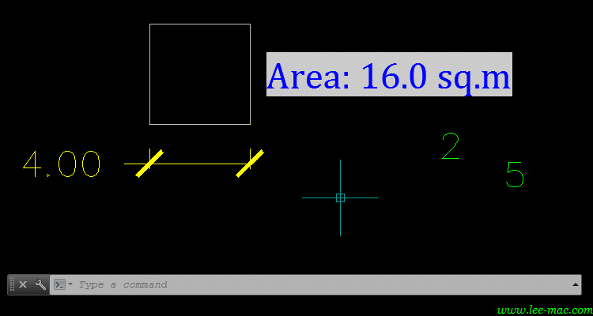

Field Arithmetic
This page is delivered for consistency purposes only, as part of the LeeMac sample module of DynALisp, which shows how DynALisp turns existing AutoLISP programs into a module. The program and its description are the work of Lee Mac, who keeps all the credit for them. The original page, with the latest version, is on Lee Mac's website: https://lee-mac.com/fieldmath.html
| Function Syntax | LM-FieldArithmetic – original syntax: fieldmath (see aliases) |
| Current Version | 1.2 |
| Compatible with AutoCAD for Mac? | No |
| Compatible with AutoCAD LT? | Yes |
| Original Page | lee-mac.com/fieldmath.html |
Program Description
This program enables the user to perform arithmetic operations (add, subtract, multiply, divide) on numerical text or fields, with the result of the calculation represented using a field expression.
Upon issuing the command syntax fieldmath at the command-line, the program will prompt the user to select a text object with numerical content. At this prompt, the user may select a single-line text object (DText), multiline text (MText), block attribute, multileader (MLeader), or dimension containing numerical content, or choose the Constant option to enter an arbitrary fixed number for use in the calculation.
The program will then prompt the user to choose an operator (addition, subtraction, multiplication, division) to follow the selected or entered numerical value in the calculation. At this prompt, the user is also provided with the option to Undo the last numerical value added to the calculation, or to complete the calculation by choosing the Result option.
Upon selecting the Result option, the program prompts the user to specify a point or table cell to insert a field expression representing the result of the calculation.
At this prompt, the user may also choose the Object option in order to populate the content of an existing annotation object with the field expression.
Upon choosing this option, the user may select any single-line text (DText), multiline text (MText), single-line or multiline attribute, attributed block, or multileader (MLeader) with either multiline text or attributed block content.
If the user selects an attributed block or attributed multileader with more than one attribute, the user is presented with a dialog interface listing the available attributes, and is prompted to select a destination for the field expression.
The user may optionally predefine the target block/multileader attribute by specifying the attribute tag where noted at the top of the program source code.
Nested Field Expressions
The program also supports nested field expressions: that is, annotation objects which themselves contain field expressions referencing numerical values, as demonstrated by the 'Area' text in the animation below.
When encountering such objects, by default the program will reference the nested field expression directly in the calculation (ignoring any field formatting), as opposed to referencing the text content of the object containing the field expression.
This default behaviour may be toggled by changing the nst parameter within the 'Program Parameters' section of the program source code (see below).
Demonstration

Result Format
The field formatting code indicated at the top of the program source code 'Program Parameters' section may be altered to display the result of the calculation in a desired format:
;;----------------------------------------------------------------------;; ;; Program Parameters ;; ;;----------------------------------------------------------------------;; ;; Field formatting for result ("" for no formatting) fmt "%lu6%qf1" ;; Reference nested fields directly nst t ;; Optional predefined attribute tag tag nil ;;----------------------------------------------------------------------;;
To determine the correct formatting code to be used, perform the following steps:
- Type FIELD at the AutoCAD command-line and press ENTER to open the Field dialog.
- Select Objects from the 'Field Category' drop-down menu.
- Select Formula from the 'Field Names' section.
- Enter an arbitrary number in the 'Formula' panel and click Evaluate.
- Configure the formatting options as desired.
- Click OK and pick a point in the drawing to create a temporary MText Field.
- Download & load my Field Formatting Code program.
- Type fieldformat to run the program and select the temporary MText Field created earlier.
- Following a valid selection, the field formatting code will be printed to the command-line, e.g.:
- Copy the formatting code (including the quotation marks) to the program source code where noted:
- Save and load the modified program file.
Formatting code: "%lu4%ds44%th39"
fmt "%lu4%ds44%th39"
Bundled program notes
;;------------------------=={ Field Arithmetic }==----------------------;;
;; ;;
;; ----------------------------------- ;;
;; Program Overview ;;
;; ----------------------------------- ;;
;; ;;
;; This program enables the user to perform arithmetic operations ;;
;; (add, subtract, multiply, divide) on numerical text or fields, ;;
;; with the result of the calculation represented using a field ;;
;; expression. ;;
;; ;;
;; Upon issuing the command syntax 'fieldmath' at the command-line, ;;
;; the program prompts the user to select a text object with ;;
;; numerical content. At this prompt, the user may select a ;;
;; single-line text object (DText), multiline text (MText), block ;;
;; attribute, multileader (MLeader), or dimension containing numerical ;;
;; content, or choose the 'Constant' option to enter an arbitrary ;;
;; fixed number for use in the calculation. ;;
;; ;;
;; The program then prompts the user to choose an operator (addition, ;;
;; subtraction, multiplication, division) to follow the selected or ;;
;; entered numerical value in the calculation. At this prompt, the ;;
;; user is also provided with the option to 'Undo' the last numerical ;;
;; value added to the calculation, or to complete the calculation by ;;
;; choosing the 'Result' option. ;;
;; ;;
;; Upon selecting the 'Result' option, the program prompts the user ;;
;; to specify a point or table cell to insert a field expression ;;
;; representing the result of the calculation. ;;
;; ;;
;; At this prompt, the user may also choose the 'Object' option in ;;
;; order to populate the content of an existing annotation object ;;
;; with the field expression. ;;
;; ;;
;; Upon choosing this option, the user may select any single-line ;;
;; text (DText), multiline text (MText), single-line or multiline ;;
;; attribute, attributed block, or multileader (MLeader) with either ;;
;; multiline text or attributed block content. ;;
;; ;;
;; If the user selects an attributed block or attributed multileader ;;
;; with more than one attribute, the user is presented with a dialog ;;
;; interface listing the available attributes, and is prompted to ;;
;; select a destination for the field expression. ;;
;; ;;
;; The user may optionally predefine the target block/multileader ;;
;; attribute by specifying the attribute tag where noted at the top ;;
;; of the program source code. ;;
;; ;;
;; ----------------------------------- ;;
;; Nested Field Expressions ;;
;; ----------------------------------- ;;
;; ;;
;; The program also supports nested field expressions: that is, ;;
;; annotation objects which themselves contain field expressions ;;
;; referencing numerical values. ;;
;; ;;
;; When encountering such objects, by default the program references ;;
;; the nested field expression directly in the calculation (ignoring ;;
;; any field formatting), as opposed to referencing the text content ;;
;; of the object containing the field expression. ;;
;; ;;
;; This default behaviour may be toggled by changing the 'nst' ;;
;; parameter within the 'Program Parameters' section of the program ;;
;; source code below. ;;
;; ;;
;;----------------------------------------------------------------------;;
;; Author: Lee Mac, Copyright © 2017 - www.lee-mac.com ;;
;;----------------------------------------------------------------------;;
;; Version 1.0 - 2017-05-14 ;;
;; ;;
;; - First release. ;;
;;----------------------------------------------------------------------;;
;; Version 1.1 - 2017-06-13 ;;
;; ;;
;; - Updated LM:fieldcode function to account for field expressions ;;
;; greater than 250 characters in length. ;;
;;----------------------------------------------------------------------;;
;; Version 1.2 - 2018-10-29 ;;
;; ;;
;; - Incorporated LM:outputtext function to facilitate output of the ;;
;; resulting field to existing table cells, text, mtext, ;;
;; multileaders, attributes, or as a new mtext object. ;;
;;----------------------------------------------------------------------;;
Command Names And Aliases
As in every DynALisp module, each program of this sample module has one main command, named LM-*, and the original command names of Lee Mac's page are kept as its aliases: they run the same command, and can be added, renamed or removed in Dyl-Suite (saved in Resources\Aliases.csv).
| Command | Aliases | Name |
|---|---|---|
| LM-FieldArithmetic | FIELDMATH | Field Arithmetic |